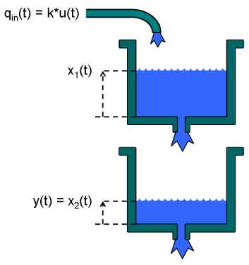
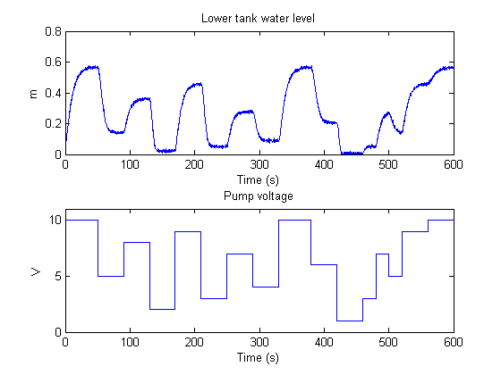
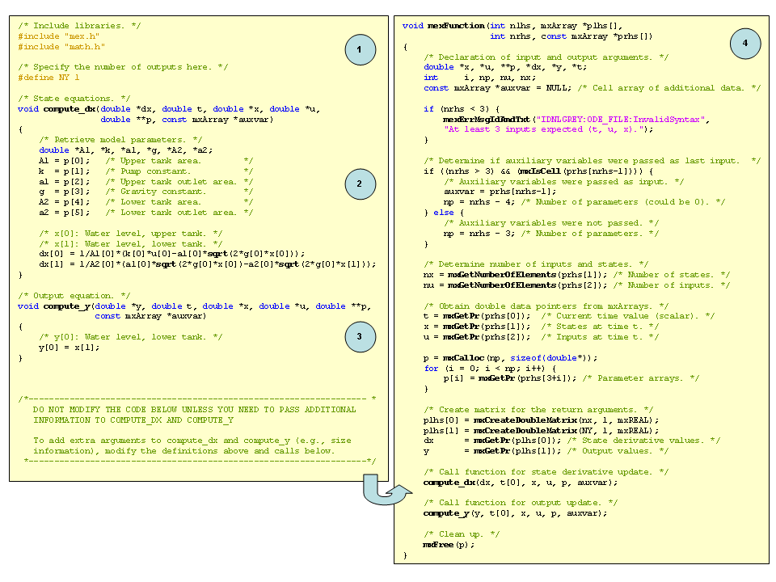
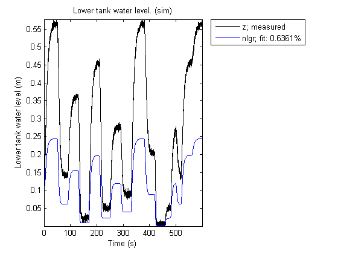
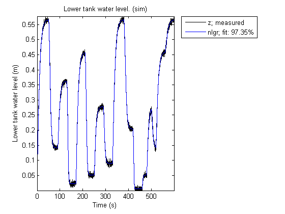
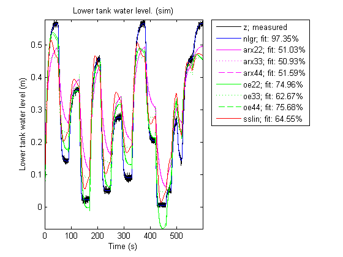
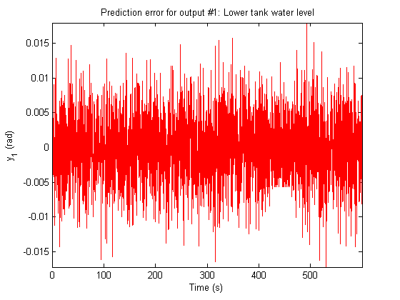
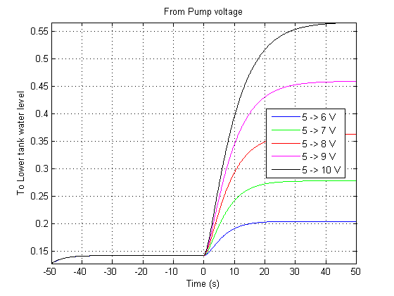

A Two Tank System: C MEX-File Modeling of Time-Continuous SISO System
The purpose of this demo is firstly to show how to perform IDNLGREY modeling based on C MEX modeling files and secondly to provide a rather simple example where nonlinear state space modeling really pays off.
Contents
A Two Tank System
The objective in the demo is to model the liquid level of the lower tank of a laboratory scale two tank system, schematically shown in Figure 1.

Figure 1: Schematic view of a two tank system.
Input-Output Data
We start the modeling job by loading the available input-output data, which was simulated using the below IDNLGREY model structure, with noise added to the output. The twotankdata.mat file contains one data set with 3000 input-output samples, generated using a sampling rate (Ts) of 0.2 seconds. The input u(t) is the voltage [V] applied to a pump, which generates an inflow to the upper tank. A rather small hole at the bottom of this upper tank yields an outflow that goes into the lower tank, and the output y(t) of the two tank system is then the liquid level [m] of the lower tank. We create an IDDATA object z to hold the tank data. For bookkeeping and documentation purposes we also specify channel names and units. This step is optional.
load(fullfile(matlabroot, 'toolbox', 'ident', 'iddemos', 'data', 'twotankdata')); z = iddata(y, u, 0.2, 'Name', 'Two tanks'); set(z, 'InputName', 'Pump voltage', 'InputUnit', 'V', ... 'OutputName', 'Lower tank water level', 'OutputUnit', 'm', ... 'Tstart', 0, 'TimeUnit', 's');
The input-output data that will be used for estimation are shown in a plot window.
figure('Name', [z.Name ': input-output data']); plot(z);
Figure 2: Input-output data from a two tank system.
Modeling the Two Tank System
The next step is to specify a model structure describing the two tank system. To do this, let x1(t) and x2(t) denote the water level in the upper and the lower tank, respectively. For each tank, fundamental physics (mass balance) states that the change of water volume depends on the difference between in- and outflow as (i = 1, 2):
d/dt (Ai*xi(t)) = Qini(t) - Qouti(t)
where Ai [m^2] is the cross-sectional area of tank i and Qini(t) and Qouti(t) [m^3/s] are the inflow to and the outflow from tank i at time t.
For the upper tank, the inflow is assumed to be proportional to the voltage applied to the pump, i.e., Qin1(t) = k*u(t). Since the outlet hole of the upper tank is small, Bernoulli's law can be applied, stating that the outflow is proportional to the square root of the water level, or more precisely that:
Qout1(t) = a1*sqrt(2*g*x1(t))
where a1 is the cross-sectional area of the outlet hole and g is the gravity constant. For the lower tank, the inflow equals the outflow from the upper tank, i.e., Qin2(t) = Qout1(t), and the outflow is given by Bernoulli's law:
Qout2(t) = a2*sqrt(2*g*x2(t))
where a2 is the cross-sectional area of the outlet hole.
Put altogether these facts lead to the following state-space structure:
d/dt x1(t) = 1/A1*(k*u(t) - a1*sqrt(2*g*x1(t)))
d/dt x2(t) = 1/A2*(a1*sqrt(2*g*x1(t)) - a2*sqrt(2*g*x2(t)))
y(t) = x2(t)Two Tank C MEX Model File
These equations are next put into a C MEX-file with 6 parameters (or constants), A1, k, a1, g, A2 and a2. The C MEX-file is normally a bit more involved than the corresponding file written using MATLAB language, but C MEX modeling generally gives a distinct advantage in terms of execution speed, especially for more complex models. A template C MEX-file is provided (see below) to help the user to structure the code. For most applications, it suffices to define the number of outputs and to enter the code lines that describe dx and y into this template. An IDNLGREY C MEX-file should always be structured to return two outputs:
dx: the right-hand side(s) of the state-space equation(s) y: the right-hand side(s) of the output equation(s)
and it should take 3+Npo(+1) input arguments specified as follows:
t: the current time
x: the state vector at time t ([] for static models)
u: the input vector at time t ([] for time-series models)
p1, p2, ..., pNpo: the individual parameters (which can be real
scalars, column vectors or 2-dimensional matrices); Npo is here
the number of parameter objects, which for models with scalar
parameters coincide with the number of parameters Np
FileArgument: optional inputs to the model fileIn our two tank system there are 6 scalar parameters and hence the number of input arguments to the C MEX modeling file should be 3+Npo = 3+6 = 9. The trailing 10:th argument can here be omitted as no optional FileArgument is employed in this application.
Writing a C MEX modeling file is normally done in four steps:
1. Inclusion of C-libraries and definitions of the number of outputs.
2. Writing the function computing the right-hand side(s) of the state
equation(s), compute_dx.
3. Writing the function computing the right-hand side(s) of the output
equation(s), compute_y.
4. Writing the main interface function, which includes basic error
checking functionality, code for creating and handling input and
output arguments, and calls to compute_dx and compute_y.Let us view the C MEX source file (except for some comments) for the two tank system and based on this discuss these four items in some more detail.

Figure 3: C MEX source code for the two tank system.
1. Two C-libraries mex.h and math.h are normally included to provide access to a number of MEX-related as well as mathematical functions. The number of outputs is also declared per modeling file using a standard C-define:
/* Include libraries. */ #include "mex.h" #include "math.h"
/* Specify the number of outputs here. */ #define NY 1
2-3. Next in the file we find the functions for updating the states, compute_dx, and the output, compute_y. Both these functions hold argument lists, with the output to be computed (dx or y) at position 1, after which follows all variables and parameters required to compute the right-hand side(s) of the state and the output equations, respectively.
The first step in these functions is to unpack the model parameters that will be used in the subsequent equations. Any valid variable name (except for those used in the input argument list) can be used to provide physically meaningful names of the individual parameters encoded in p.
As is the case in C, the first element of an array is stored at position 0. Hence, dx[0] in C corresponds to dx(1) in MATLAB® (or just dx in case it is a scalar), the input u[0] corresponds to u (or u(1)), the parameter A1[0] corresponds to A1, and so on.
The two tank model file involves square root computations. This is enabled through the inclusion of the mathematical C library math.h. The math library realizes the most common trigonometric functions (sin, cos, tan, asin, acos, atan, etc.), exponential (exp) and logarithms (log, log10), square root (sqrt) and power of functions (pow), and absolute value computations (fabs). The math.h library must be included whenever any math.h function is used; otherwise it can be omitted. See "Tutorials on Nonlinear Grey Box Model Identification: Creating IDNLGREY Model Files" for further details about the C math library.
4. The main interface function should almost always have the same content and for most applications no modification whatsoever is needed. In principle, the only part that might be considered for changes is where the calls to compute_dx and compute_y are made. For static systems, one can leave out the call to compute_dx. In other situations, it might be desired to only pass the variables and parameters referred in the state and output equations. For example, in the output equation of the two tank system, where only one state is used, one could very well shorten the input argument list to:
void compute_y(double *y, double *x)
and call compute_y as:
compute_y(y, x);
The input argument lists of compute_dx and compute_y might also be extended to include further variables inferred in the interface function, like the number of states and the number of parameters.
Once the model source file has been completed it must be compiled, which can be done from the MATLAB command prompt using the mex command; see "help mex". (This step is omitted here.)
When developing model specific C MEX-files it is often useful to start the work by copying the IDNLGREY C MEX template file. This template contains skeleton source code as well as detailed instructions on how to customize the code for a particular application. The location of the template file is displayed by typing the following at the MATLAB command prompt.
fullfile(matlabroot, 'toolbox', 'ident', 'nlident', 'IDNLGREY_MODEL_TEMPLATE.c')
In "echodemo" mode, You can execute this command right away. Also, consult "Tutorials on Nonlinear Grey Box Model Identification: Creating IDNLGREY Model Files" for more details and examples of IDNLGREY C MEX model files.
Creating a Two Tank IDNLGREY Model Object
The next step is to create an IDNLGREY object describing the two tank system. For convenience we also set some bookkeeping information about the inputs and outputs (name and units).
FileName = 'twotanks_c'; % File describing the model structure. Order = [1 1 2]; % Model orders [ny nu nx]. Parameters = {0.5; 0.0035; 0.019; ... 9.81; 0.25; 0.016}; % Initial parameters. InitialStates = [0; 0.1]; % Initial initial states. Ts = 0; % Time-continuous system. nlgr = idnlgrey(FileName, Order, Parameters, InitialStates, Ts, ... 'Name', 'Two tanks'); set(nlgr, 'InputName', 'Pump voltage', 'InputUnit', 'V', ... 'OutputName', 'Lower tank water level', 'OutputUnit', 'm', ... 'OutputUnit', {'rad' 'rad/s'}, ... 'TimeUnit', 's');
We continue to add information about the names and the units of the states and the model parameters via the commands SETINIT and SETPAR. Furthermore, both states x1(t) and x2(t) are tank levels that cannot be negative, and thus we also specify that x1(0) and x2(0) >= 0 via the 'Minimum' property. In fact, we also know that all model parameters ought to be strictly positive. We therefore set the 'Minimum' property of all parameters to some small positive value (eps(0)). These settings implies that constraint estimation will be carried out in the upcoming estimation step (i.e., the estimated model will be a model such that all entered constraints are honored).
setinit(nlgr, 'Name', {'Upper tank water level' 'Lower tank water level'}); setinit(nlgr, 'Unit', {'m' 'm'}); setinit(nlgr, 'Minimum', {0 0}); % Positive levels! setpar(nlgr, 'Name', {'Upper tank area' ... 'Pump constant' ... 'Upper tank outlet area' ... 'Gravity constant' ... 'Lower tank area' ... 'Lower tank outlet area'}); setpar(nlgr, 'Unit', {'m^2' 'm^3/(s*V)' 'm^2' 'm/(s^2)' 'm^2' 'm^2'}); setpar(nlgr, 'Minimum', num2cell(eps(0)*ones(6,1))); % All parameters > 0!
The cross-sectional areas (A1 and A2) of the two tanks can rather accurately be determined. We therefore treat these and g as constants and verify that the 'Fixed' field is properly set for all 6 parameters through the command GETPAR. All in all, this means that 3 of the model parameters will be estimated.
nlgr.Parameters(1).Fixed = true;
nlgr.Parameters(4).Fixed = true;
nlgr.Parameters(5).Fixed = true;
getpar(nlgr, 'Fixed')
ans =
[1]
[0]
[0]
[1]
[1]
[0]
Performance of the Initial Two Tank Model
Before estimating the free parameters k, a1 and a2 we simulate the system using the initial parameter values. We use the default differential equation solver (a Runge-Kutta 45 solver with adaptive step length adjustment) and set the absolute and relative error tolerances to rather small values (1e-6 and 1e-5, respectively). Notice that the COMPARE command, when called with two input arguments, as default will estimate all initial state(s) regardless of whether any initial state has been defined to be 'Fixed'. In order to only estimate the free initial state(s), call COMPARE with a third and a fourth input argument as follows: compare(z, nlgr, 'init', 'm'); as both initial states of the tank model by default are 'Fixed', no initial state estimation will be performed by this command. In "echodemo" mode you can try this right away at the command prompt.
nlgr.Algorithm.SimulationOptions.AbsTol = 1e-6; nlgr.Algorithm.SimulationOptions.RelTol = 1e-5; figure; compare(z, nlgr);
Figure 4: Comparison between true output and the simulated output of the initial two tank model.
The simulated and true outputs are shown in a plot window, and as can be seen the fit is not so impressive.
Parameter Estimation
In order to improve the fit, the 3 free parameters are next estimated through PEM. (Since, by default, the 'Fixed' fields of all initial states are false, no estimation of the initial states will be done in this call to PEM.)
nlgr = pem(z, nlgr, 'Display', 'Full');
Criterion: Trace minimization
Scheme: Trust-Region Reflective Newton (LSQNONLIN, LargeScale = 'On')
--------------------------------------------------------------
Norm of First-order
Iteration Cost step optimality
--------------------------------------------------------------
0 0.0338424 - -
1 0.00328844 0.00426 6.32e+003
2 0.000128094 0.00341 188
3 2.57135e-005 0.00163 177
4 2.46519e-005 0.00134 1.17
5 2.4316e-005 0.0163 72.2
6 2.41538e-005 0.000463 0.359
7 2.41463e-005 0.00395 5.84
8 2.41439e-005 0.000915 0.184
--------------------------------------------------------------
Performance of the Estimated Two Tank Model
To investigate the performance of the estimated model, a simulation of it is performed (the initial states are here reestimated).
figure; compare(z, nlgr);
Figure 5: Comparison between true output and the simulated output of the estimated two tank model.
The agreement between the true and the simulated outputs is quite good. A remaining question is, however, if the two tank system can be accurately described using a simpler and linear model structure. To answer this, let us try to fit the data to some standard linear model structures, and then use COMPARE to see how well these models capture the dynamics of the tanks.
nk = delayest(z); arx22 = arx(z, [2 2 nk], 'cov', 'none'); % Second order linear ARX model. arx33 = arx(z, [3 3 nk], 'cov', 'none'); % Third order linear ARX model. arx44 = arx(z, [4 4 nk], 'cov', 'none'); % Third order linear ARX model. oe22 = oe(z, [2 2 nk], 'cov', 'none'); % Second order linear OE model. oe33 = oe(z, [3 3 nk], 'cov', 'none'); % Third order linear OE model. oe44 = oe(z, [4 4 nk], 'cov', 'none'); % Fourth order linear OE model. sslin = pem(z, 'cov', 'none'); % State-space model. figure; compare(z, nlgr, 'b', arx22, 'm-', arx33, 'm:', arx44, 'm--', ... oe22, 'g-', oe33, 'g:', oe44, 'g--', sslin, 'r-');
Figure 6: Comparison between true output and the simulated outputs of a number of estimated two tank models.
The comparison plot clearly reveals that the linear models cannot pick up all dynamics of the two tank system. The estimated nonlinear IDNLGREY model on the other hand shows an excellent fit to the true output. In addition, the IDNLGREY model parameters are also well in line with those used to generate the true output. In the following display computations, we are using the command GETPVEC, which returns a parameter vector created from the structure array holding the model parameters of an IDNLGREY object.
disp(' True Estimated parameter vector'); ptrue = [0.5; 0.005; 0.02; 9.81; 0.25; 0.015]; fprintf(' %1.4f %1.4f\n', [ptrue'; getpvec(nlgr)']);
True Estimated parameter vector 0.5000 0.5000 0.0050 0.0049 0.0200 0.0200 9.8100 9.8100 0.2500 0.2500 0.0150 0.0147
The prediction errors obtained using PE are small and look very much like random noise.
figure; pe(z, nlgr);
Figure 7: Prediction errors obtained for the estimated IDNLGREY two tank model.
Let us also investigate what happens if the input voltage is increased from 5 to 6, 7, 8, 9 and 10 V in a step-wise manner. We do this by calling STEP with different specified 'InputLevels' (or 'ul' for short).
figure('Name', [nlgr.Name ': step responses']); t = (-50:0.1:50)'; step(nlgr, 'b', 'InputLevels', [5;6], t); line(t, step(nlgr, 'ul', [5;7], t), 'color', 'g'); line(t, step(nlgr, 'ul', [5;8], t), 'color', 'r'); line(t, step(nlgr, 'ul', [5;9], t), 'color', 'm'); line(t, step(nlgr, 'ul', [5;10], t), 'color', 'k'); grid on; legend('5 -> 6 V', '5 -> 7 V', '5 -> 8 V', '5 -> 9 V', '5 -> 10 V', ... 'Location', 'Best'); axis('tight');
Figure 8: Step responses obtained for the estimated IDNLGREY two tank model.
By finally using the PRESENT command, we get summary information about the estimated model:
present(nlgr);
Time-continuous nonlinear state-space model defined by 'twotanks_c' (MEX-file):
dx/dt = F(t, u(t), x(t), p1, ..., p6)
y(t) = H(t, u(t), x(t), p1, ..., p6) + e(t)
with 1 input, 2 states, 1 output, and 3 free parameters (out of 6).
Input:
u(1) Pump voltage(t) [V]
States: initial value
x(1) Upper tank water level(t) [m] xinit@exp1 0 (fix) in [0, Inf]
x(2) Lower tank water level(t) [m] xinit@exp1 0.1 (fix) in [0, Inf]
Output:
y(1) Lower tank water level(t) [rad]
Parameters: value standard dev
p1 Upper tank area [m^2] 0.5 0 (fix) in ]0, Inf]
p2 Pump constant [m^3/(s*V)] 0.00488443 0.0259044 (est) in ]0, Inf]
p3 Upper tank outlet area [m^2] 0.0199722 0.00645303 (est) in ]0, Inf]
p4 Gravity constant [m/(s^2)] 9.81 0 (fix) in ]0, Inf]
p5 Lower tank area [m^2] 0.25 0 (fix) in ]0, Inf]
p6 Lower tank outlet area [m^2] 0.0146504 0.0776102 (est) in ]0, Inf]
The model was estimated from the data set 'Two tanks', which
contains 3000 data samples.
Loss function 2.41439e-005 and Akaike's FPE 2.41922e-005
Created: 29-Jun-2010 23:40:23
Last modified: 29-Jun-2010 23:40:31
Conclusions
In this demo we have shown:
1. how to use C MEX-files for IDNLGREY modeling, and
2. provided a rather simple example where nonlinear state-space
modeling shows good potentialAdditional Information
For more information on identification of dynamic systems with System Identification Toolbox™ visit the System Identification Toolbox product information page.